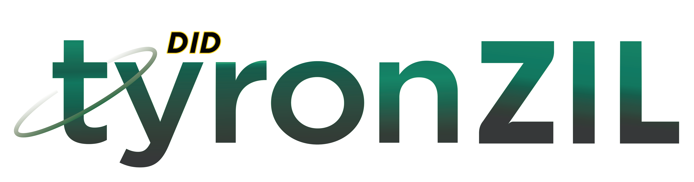

Decentralized Identifier Method Specification
The user of Tyron is the owner of its immutable, decentralized identity smart contract.
DID dapps:
- DIDxWallet: decentralized identifier smart wallet
- INIT.tyron: SSI initialization & DNS smart contract
Smart contracts on Zilliqa get written in Scilla (Smart Contract Intermediate-Level Language) that has a design focused on safety, imposing a language structure that makes applications less vulnerable to attacks by eliminating known vulnerabilities directly at the language level.
Scilla provides formal verification with embedding into the Coq proof assistant.
The tyronzil DID Method is part of the W3C DID Specification Registries and the first DID Method for the Zilliqa blockchain platform, funded by ZILHive Innovation track.
-
Scheme:
-
DID CRUD operations:
Conformance
The tyronzil DID Method specification is conformant with the World Wide Web Consortium (W3C) Decentralized Identifiers (DIDs) v1.0 specification.
The key words "MUST", "MUST NOT", "REQUIRED", "SHALL", "SHALL NOT", "SHOULD", "SHOULD NOT", "RECOMMENDED", "MAY", and "OPTIONAL" in this specification are to be interpreted as described in RFC 2119.
Versions get organized by Semantic Versioning.
Off-chain software
- SSI client for Node.js: tyronzil
- JavaScript library: tyron.js
- React web app: SSI Browser